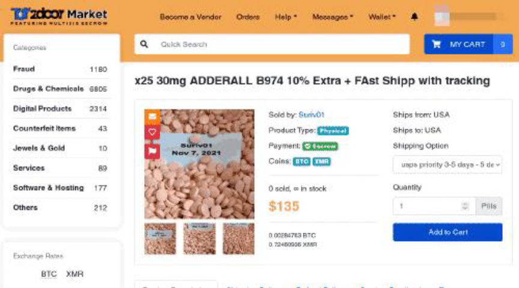
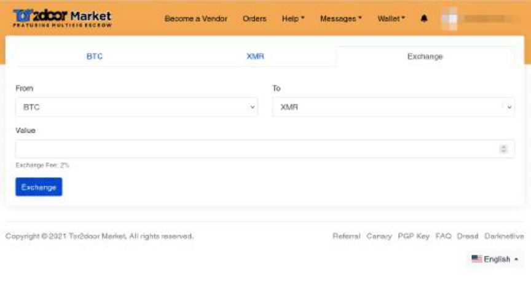

Tor2door Market
Tor2door is a Modern anonymous market featuring secure multisig escrow, centralized escrow and finalize Early. BTC and XMR accepted. Market is developed with security and user-friendliness in mind. T2D equally features jabber/XMPP notifications among many other interesting aspects.
Mirrors
- xn62pd2o7luuwrp6rqg3xmrrchwcaeo3reolifjvx3sunmwqy74j5gyd.onion
- t2didmjqj7yqzlc44oiqmwr3u62xdg4pvzfrtxdy2wsewgrt2zelwhyd.onion
- t2dscdthkhqjxxk5cwdei2lwx7q2jd344d6psy732wegrfidn2hls6ad.onion
- t2d4guudlshmyuwhd5tse2n247j5pyikztdfv2ejfrmlj4jf2lnruwad.onion
- t2dv3bc67573c5f7mrfnflekuzhs5lt2c6rcq3k2acp5j72poeua5bad.onion
- t2djo2rmosnv627cebvpudnub4erkncqq2xln6y2233sje7ij6qefiyd.onion
- t2dxvwjkafvbksbny372abwmm76ef76rzn7534ho7pkwcqbs4vqgzmid.onion
Rotational Link
This service is under DDoS, if the above mirrors don't work, check dnm.watch for rotating links.
PGP Keys
Tor2door Market Public PGP
-----BEGIN PGP PUBLIC KEY BLOCK----- mQINBGA8soIBEADElYkpSQfxbJADdBwEkr2PvlB3X4mCQRNLju5zAkrvudU0KUbV HjRL1Rv4Jie/gHYNw7zKRiiEhhbGDdwcHwiihGYAqkw/uAl9U95U23bL2en/dAd6 OYN8j8OvoORBP07R7T0rY+dLnG9Er4pPhKuDuFcGS/Da2RERq0BuTlvGxx4jHf+4 eXheRZzzftruXvchsOyC5hyfW4AOQH3JejcGXPwl/pGiDjkCdh6Xid9w+/Cdw/R4 p02n4tuOTRC56vC1xrse0SPurBHEIFQFfm35uh9CL2aYnJd/zMMX99WdDN+8fh0h qPg03t6svpxAdWZvXV7NJ4YWt4PhM8HHyIJQZ4li8ILC2I+a2YvfTJJzoSjehHSa CEDHOwChrtbbmsJxbTsArzahCgRvCfCjyPEI0Fjc1m/IcJWRJ0OgCAFULnqF4+bv RjuWfy/X71aoJT1qzWQm/0fgZxMFnevm9Lc1EMrBA00vTjD7E62Jl6LCwwVuTpea WK1GjsQnUy0MWxoY+r/hMOa5eQK+I5EbQuqOBaaBUznQ+x9pVMKhgmspMsZKIBkK tz5sxlUfabcyA8kl6Rj9zmbsF+l+aan6qgLKqrUUpxv8weYiZ3wOFvmzYvffNy6h Sz6Pm7y6QmScY3aj8OOupa/llmGXUX/kqJbAeFUJ4S9SGd6G5vCHwEfl2QARAQAB tAhUMkRfUEdQMokCPQQTAQoAJwUCYDyyggIbAwUJB4YfgAULCQgHAwUVCgkICwUW AgMBAAIeAQIXgAAKCRA5C5RNIxtNp0Q4D/sHVmZnQEIFDrWdJ+qq9mGrWtOolOVR l0dz4+eXjwu6qKjaZ/jY3F/o3MZYmXhAmknwehHMPs5Pgs4GVeLgrhnchJZ0gdbu H0u75bOkvZLhCFV6/6BWtT6i8Jw2ZbufYFWrXwhc7K+uEsvO+cqUys3EMXypeytZ ZreUyobYgLP8BkTxc8Nnp2zJJqe2mdxxAN5QfnBhAoIKX8F5/2sEtOCvDOeI9Wr6 7cZg7810eWHHPV0zmMS5mIw+YRJfyXIlXPTc6aE6t314ph7yy9+m+essDv1JQFn9 UyojVjjbI+3yxqObrSute2WRyR/AW80qS7GcOTNZEKYm7JPslf/ybmpWAjsB8mQC fuyFUa/YAhpkQdvtJ3oZoqPbEdJGGnqIkpQUKHvJ211QcAVHuzGQMgOFycmHbAxZ lwKvgpHBLLCperXx93wiErDiK6bjZbCUc0bfGn+ZWWb6SGBhx2H3uh26DnD8e7/w sPvZrTZhoRKXOjRMuxoUq1FPz7RXLg5F6drco+/N7OuBUOJlHNkILtRViJUVMLIv fIz2qCqZm+3DwvV5w8d4RRnyyQcIQGUEp2N2a7WsnrDT9J4aMjO1g0LWeoF902hl MDMPkD7EO7tGe3YNRDADABdsYKf3kfHS/wsb2JMQS8tjgsqOZI4WjhTAIkZzZ6+W 9F15oNs4oQrtj7kCDQRgPLKCARAAsApIQTXPcfOKGTItVKn/AGf7y2KJ0WTPGjN0 /nN+D9B+fW9LVXwtVWJeeyv6EHV+NFIgy+LiQN1kjQXatXMaSlXMrZ1GwA6JeNTt VQRVfIcsxINxODAtcxceo+IEWOAat01uejWQAqGgNinnQmt3TlXRNjM271ZPf90G o1SMSiMzhBLKdAetGKJHHHpR0HzSZuy96l0VgqsNXpCrSeXE3uJbjyH/DmkRTD+8 6qSXb2f4h5SDewESKCdYFrICWe22M/OzRQkEcRqW5CQJP5gPTTAAtW1vwHHRTDyw 13tuE9QteQETh7jQJ3kF6aR14Si0+qlx6uG65ZeuPinMhX+Jmry66DZMGZrv9JYO xO7LlEmAGEqykWRxuJ0zz3/fLUE8IcsXroFf7621MiSjEm959/wyyfJHMcHyR3kn aad/sdW1bnhENaz3QVJQvqddv32/P87EvfvcU3XH+/2CEswJ5yfVFnflj0gmAtEh FofZ4xjdFMK4dhPOEy/o1BPk1Z+T6uVSu7GQBWOI6lB0vQ2huwb9jV641Cr5gge1 XgIl0PXI2j8DPhVG9EB4trb+1hWSEb8PyKir/tedd998Qu3T+bYUTDKT5XVnG20T h42LRiycnAtq6KCawRq4cCpw+9ZZYoMpd8nQFbOFzdUenvwvfLnShpomKFSWwl5+ fb3NYZUAEQEAAYkCJQQYAQoADwUCYDyyggIbDAUJB4YfgAAKCRA5C5RNIxtNp6T2 D/4noLmbQb7VmWKuh/L9vs5sK8lAQlUSmrg4f5V1cE6bTEQAZCmD+/V5KM3vsmi8 VsZcA5e89nuLUY/i8vnOK8IVF/RBqRxEwovbYEje6aA9JQxJE6BYUizKd9Kwhmma U3KCRmaSAGI4Y8neTqdxQlvRpNeyIUfIxBKlZi1GRfg1kzy+E7KfOW4V57c/VmLg 6r/X9lGptG3mVHLN0Vv6l6FWp9Qhels17/L/yFfvAFaHzXiq7bUGltZxzzma5egN ao2rbfsHQW0m5YjNep29RTdwYAU43KbiwkvFn9JZEqbSfQxgrv0I6POScyq5SJCG g5/7WWZSfga+gRJ8H2Q+Adr0PlP2IuFn2azWZHOpPI7i/1LOmhFRASWMRwtnLRma MX1el8I0IOl5ZbEv91LeFQsdBiX5epWgMfwSoyDpZLWEhs5PlCQ13ihuqTF0/QKO fcEkQDBk1ndrdw4fE45oW1NGe33xEIDyB6aN+Uy4uUaMMWWb7Tc5e29NDboZtuYX C3QzWXjuqxtgNGdbJiMHwy6XMJitOP5uKcrkOzEdtXMiW5zra8LG6q9zZODH4xfp fT845Typ1mfuYAZGXn07UweoE9UCEXOVJy50BEnIR6G4qyU6PZpprSUA68Ufa8RW AVSc+I+Z/y19rEXfjPuMFW0Yds/L03aLn0GHgZHNJJa3LQ== =Yebz -----END PGP PUBLIC KEY BLOCK-----
Multisignature Escrow
Traditional Escrow
Finalize Early
Smooth buying and selling process
The Tor2Door Homepage

Tor2Door also offers an exchange service

An individual listing on Tor2Door
What is the sales commission on Tor2Door Market?
5%
How much is the vendor bond on Tor2door Market?
The FAQ says $150 but the list of rules says $300 0.00632802 BTC / 1.61245049 XMR)
What can& #38; #38; #8217; t you sell on Tor2door market?
Child porn, Prostitution, Weapons, Murder services, terrorism, poison, fentanyl
Rules
The following products/services are strictly prohibited from Tor2door Market: Child porn, Prostitution, Poison, Fentanyl, Murder services, Weapons
PGP-2FA is mandatory for all vendors.
There& #38; #38; #8217; s a nonrefundable vendor bond of $300 (0.00632802 BTC / 1.61245049 XMR)
Orders of digital products auto-finalizes in 48 hours whilst orders for physical products auto-finalizes in14 days.
Dox is strictly prohibited.
Product description must be very accurate and void of any misleading information
All transactions including messaging and ordering must be conducted in the market. Any vendor trying to deal outside the market will be banned without any further warning. NO COMMISSIONS NO SERVICE
Reviews (300)(Average Rating 3.6 / 5.0)
darknetius2021-11-18
nothing
will2022-01-01
the markets down
palehorse62022-01-02
Update on the market? Its been down for days now. AF orders? Is there another way to enter?
Jack2022-01-02
Please, communication is key. Dont loose the many loyal customers and great reputation. A brief what to expect messages please. What happened ? Site manager /supervisor....Many had A.F. Many had money in thier accounts for future orders. Please update any information regarding the site.
Mobius2022-01-02
still down :( right after i added to my wallet as well hope this is-int an exit scam, has any one experienced this before?
Arduous2022-01-03
Have not, and the lack of communication is unbelievable. If it was an exit, at least tell us to fuck off. Human behavior, its actually concerning that so many in society exist if true. Had a professor say one time, the conduct of advantage taken from the trusted in need is equal to that of a child molester. The topic was deeper than this, however, he was stressing the magnitude of behavior in certain areans.
Tor2Door TOP VENDOR2022-01-03
Lets say this, 1 post on the dread Tor2Door about a few hours of maintenace, so that everyone wouldnt freak out....then (im not saying this is true) but while everyone is relaxed, admin cleans out all coin from accounts and from escrow, but this is just theory...although we find the timing interesting, since we were a top 5 vendor, #3 or #4 at the time before maintenance, we had about $7,000 in escrow that would all finalize within about 18 hours of each other, and the autofinalize time was for about 3-5 hours after the site goes "down for maintenance" not to mention we had about another 1,000 in BTC and about $800 in xmr we were about to withdrawl since obviously we dont like to let our balance stay too large anywhere....but now almost 5-5 and a half days later, with NO WORD FROM THE ADMIN ANYWHERE, our team has already prepared ourselves to write that $$ off as a fucked up loser that just got everybody over just a little bit of bread....
vendorxangod2022-01-08
market is back and working fine
ant2022-01-19
mostly down...
jondoe2022-01-22
i like this market ui
witchmandad2022-01-23
good staff
me2022-01-23
This market is great. If u cannot log on go to dnm.watch. it will give u link. This is best market on here
me2022-01-23
All my orders were refunded while site was under construction. It's all fine now. Some vendors still haven't came back but it's all good yall
Battery2022-01-27
This site is very secure and running fast
Quick2022-01-28
Worse nightmare for a noob is not getting no reply on a ticket after a btc deposit. Anybody getting an answers from these ppl or naa
lara2022-01-30
from time to time down but the mirrors from dnetlive or dread are working
Jacob2022-01-30
Good market
Niggers2022-02-06
good
JOSH JMB2022-02-13
Good Market
bronco2022-02-17
hello I still do not prubo I will see what :)
pablo_2022-03-06
not a real market sometimes down for a whole months and once their wallet got hacked
THOMSHILLS2022-03-11
FUCK MAN I CANT GET THE FUKIN HELL IN...
juckliu2022-03-15
PIN码谁有
TTCs2022-03-18
Good Market
Sloco2022-03-24
Enough on the market and easy enough to use but search functions are shit, no vendors lists or sort by best rated
larry2022-04-15
all good about this market. had some trouble at begin this year, but the last 2 months all fine.
fbg2022-05-03
can anyone else not get on?
Redschilds2022-05-03
Seems pretty hood to me
Bones2022-05-07
After transfering BTC it asked for 2 factor authentication with my private PGP key, which I never gave them. Now i'm locked out
Jshadows2022-05-13
Put 200$ in the wallet and it never loaded.. No ticket response... Very upset
poopiepants242022-05-19
Just got my order,legit.makw sure you follow the link and buy from vendor with good feedback
regjyrukryuk2022-07-01
is there an outage rn ? all mirrors are down
Ohshiiiiet2022-07-02
Seems Valid and talked to some Sellers. Now all Onions are offline?!
not good2022-07-02
not working anymore ;/
catch222022-07-02
Made a few orders and all arrived on time, however i cant use ANY of the links. Hopefully not an exit scam, this market is top notch.
catch222022-07-02
Made a few orders and all arrived on time, however i cant use ANY of the links. Hopefully not an exit scam, this market is top notch.
WaterBong2022-07-02
Market is down. Top notch market.
GREGORY2022-07-02
SEEMS LIKE MARKET LINKS ARE DOWN ALL MIRRORS DOWN, WHY DON'T THEY JUST REDIRECT A FEW DOMAINS TO SOME MAINTENANCE PAGE... OR EVEN A TEXT FILE...
zefuck2022-07-02
Love the Market but its down since few days üò≠
Niceguy2022-07-02
I placed 2 orders on June 29 . 2 different vendors. Both were declared as sent 2 minutes later, that's strange, then 1 hour later, all links were dead. I'm afraid it's an exit scam
noticemeanon2022-07-02
well, i got lucky to order in before down Sory vendor.... hope not exit but with bitcoin being the way it is,
/u/sundec2022-07-03
Until the ddos stops you can get our emergency links on our subdread /d/tor2doormarket on Dread forum.
Gypsy1212022-07-03
It's not an exit scam I believe from Reddit they're working on it they said they're experiencing some down time but I don't think it's a exit scam top market
helorefnezo2022-07-04
is it only me or is the market down sometimes??? im new placed 3 orders with my last btc pls dont let it be down :(
TetraMetatron2022-07-04
Why are there phishing links posted in addresses, when the mirrors.txt is right there? Pretty sus darknetlive I hope this site comes back online. Smoothest transactions
yung5leep2022-07-04
This was my go-to market I hope that this shutdown is temporary...
yung5leep2022-07-04
Maybe they're just doing renovations on the site, world market used to do this to me before it went down
TheTruth2022-07-05
Its not a scam at all, currently under heavy DDoS. Its posted on Dread, take a look on dnm.watch for working links
Steven2022-07-06
Love this place. Wish they had more legit pharmaceuticals vs pressed junk but that’s everywhere. Can’t get in today, but also tried like 5 other markets and they are all down
Steven2022-07-06
Love this place. Wish they had more legit pharmaceuticals vs pressed junk but that’s everywhere. Can’t get in today, but also tried like 5 other markets and they are all down
ScarFace2022-07-06
You need people like Reigns to point ya fuckin finger and say.... That's the good guy!
reigns2022-07-06
test
reigns2022-07-06
@batfink If emergency links don't work, wait until they are rotated. Those emergency links update themselves every 30min to 60min. You will get access for sure.
qakar2022-07-06
I like this market a lot, easy to use, very practical, and i'm able to find every possible product there is.
PepsiLepsi2022-07-06
Love the site, very good ui and easy to use. However i cant access the site anymore and i dont know what the problem is
T.rizzle2022-07-07
EMERGENCY LINKS ARE WORKING I've been on and off all day.
GTO2022-07-07
Is dnm.watch a phishing site?
Marky2022-07-07
Site is cool but for some days already LINKS ARE NOT WORKING. Cant access the site anymore...
helaax2022-07-07
@reigns THX for the link to the emergency links, finally got access again as well!
archiebunker2022-07-07
Whats wrong with tortodoor?
timestopper2022-07-07
I am a vendor and i cant log in
TreezyO22022-07-07
https://dnm.watch/ for emergency link I made a purchase last night and the payment went through despite the site cancelling my order I'm hoping the vendor will come though
yyy2022-07-08
Where r the emergency links
reigns2022-07-08
For all. Market is under heavy ddos attack. The only way to currently enter the market is on dnm.watch using the emergency links. https://dnm.watch/
Moktor2022-07-08
Emergency links can't be pgp verified. Is it normal?
Ra1den2022-07-08
If I use one of the https://dnm.watch/ en if I do the verify URL check.... I got the message that this is a phishing site.... is dnm.watch also compromised?
reigns2022-07-09
@Ra1den, i will check that and contact the admins from tor2door. If they say dnm.watch is a legit site to enter the market i will let you guys know.
reigns2022-07-10
So the admin of the market says to ONLY use the link on dnm.watch and everyone who claims that the dnm.watch links are phishing links is probably a phisher himself. The links are totally save.
batfink2022-07-11
dnm.watch are also asking for java to be switched on ...
Alexafterdark2022-07-11
@Ra1den I do have the same shit and I wrote admin, waiting what he will say
????2022-07-12
Tor2door is legit. Just follow the links here only!
toots2022-07-12
downnnnn, even the emergency links
robosub2022-07-12
I made a purchase and the payment went through despite the site saying 'payment cancelled' Vendors and site unresponsive so far.
mi222022-07-12
What is going on? Does anyone know if tor2door is down for good? Even the link I check with the pgp key from the site (links from dnm), it says that it's a phishing site. please help.
mi222022-07-12
Is this site down too?
Yano2022-07-13
I ordered like yesterday but can’t seem to get in, what’s happening never had this happen before?
Yano2022-07-13
I ordered like yesterday but can’t seem to get in, what’s happening never had this happen before?
Yano1232022-07-13
What’s happening
Mikehunt4202022-07-13
@yano I ordered yesterday, went to log back in and it said username not found. So I made a new account and now I can’t get the site to load up either.
Yano2022-07-13
Does this happen alot? New ish here
luciano1012022-07-13
ordered 3 days ago sites now down
sm212022-07-13
Still down. ordered yesterday. can sometimes get on emergency links from dnm.watch
Mikehunt4202022-07-13
I’m new too, second order just the other day but in the month I’ve been using the site this all started last week,
Ert2022-07-13
dnm.watch is down, what do?
Yano2022-07-13
Can’t seem to be able to get on dnm.watch is that all I have to type in
Yano2022-07-13
Will the site come back on?
Mikehunt4202022-07-14
Still down as of this posting, can’t check on orders or anything. Super annoying. Also, I can’t seem to open the Dnm.watch/ links it says it needs to check my browser but never proceeds.
dtp2022-07-14
Been using for a couple months but site is now down. Ordered some bits Sunday/Monday and couldn't log back in. Some of it has arrived though ...
Mikehunt4202022-07-14
Why does my review keep getting removed
reigns2022-07-14
Today, login without any problem using the emergency links. Of course sometimes they go down. But after a while they refresh. I don't understand the bad reviews.
lol2022-07-14
Why is it always fucking down holy shit just fucking work for once.
Heisen2022-07-14
Sent bitcoins to my address and they never arrived into my account. dnm.watch isn't working either. What is a good secondary market?
shiva92022-07-14
little more info by admins somewhere please. anywhere...
Mikehunt4202022-07-14
Still can’t get onto any of the tor2door sites. Not sure if it was an exit scam or not but I’d love to know what happened to my escrow money and my purchases.
Joe892022-07-15
Site isn’t working anymore can’t get in, can’t see orders or escrow and no links are working, it’s been 5 days. Exit scam?
WT20002022-07-15
15 days ago the Market worked perfectly. All arrived. This evening I'm also can't enter to the mirror. I hope this will resolved. It's a super Market!!!
420mike2022-07-15
Anyone have any clue when the site will be back online? 5 days this is getting annoying. What about my orders and escrow?
420mike2022-07-15
Where can I find emergency links? Every link I try wants authentication
stephen morrison2022-07-16
nterested
DWOW222022-07-16
Awesome
rxfreak2022-07-17
I login everyday without any problem using the emergency links. Of course sometimes they go down. But after a while they refresh. I don’t understand the bad reviews
rxfreak2022-07-17
market is perfectly fine emergency link now available darknetlive
Helper2022-07-21
dnm.watch <- to get the emergency links
moar2022-07-21
I can't get any mirrors or PGP to verify on dnm.watch.
haha2022-07-22
can't verify any links or addresses on dnm.watch either. Still reliable?
anon2022-07-22
Is this just me or does the Key-ID not match the Tor2Door Market Key in the link?
spooky2022-07-23
I try to log in but it says, " These credentials do not match our records" despite being correct.
spooky2022-07-23
I try to log in but it says, " These credentials do not match our records" despite being correct.
Caninesal2022-07-24
I have had great ease in using this market. Just make sure you are familiar with the in and outs of stealth, why they need to make sure you know and I have had total satifaction
Booming2022-07-27
Market is down
Throwwwaway2022-07-27
Market still down.
kelvin Smart2022-07-28
What tools can I use and login Wells Fargo
moktor2022-07-28
Market is up both i2p and onion link I've just made an order.
Balpha92022-07-29
How do you verify the DDOS Mirrors
hAPPY2022-07-31
ALL G
originalone2022-08-04
why is this market still down
lawnburn2022-08-05
offline :(
Es gibt bessere2022-08-05
Es gibt bessere Markets
darren2022-08-05
market is up
6662022-08-05
offline :(
Jsware2022-08-06
I used the link from dnm.watch and got phished. I checked everything and they don't want to help me! 500$they stole me
uhmmm2022-08-07
Whats with all the retards asking questions in the review section. fucking nooblets
d0nut2022-08-07
At the moment down, trying to get in since Thursday.
originalone2022-08-07
is there any market that is still up?? i cant access anything for shit
hey2022-08-07
Links are good? Can I use them?? Dnm.watch is down!
DSWE2022-08-10
press alltime refresh on Dnm.watch after a time it works
yeayea2022-08-10
i have a link thats been good been adding money went to buy something for 1200 buck i seen the money hit my btc an went to the checkout it was two diff thing from diff places an i paid for it but didnt think about shipping an an itnsend i did have enought but it still took the 1200buck its happen rite in front of me the staff said they think i was phased ive been phased thats not what this was so the staff said my account undervestion
Originalone2022-08-10
yeayea share the link on tele with me please
Originalone2022-08-10
yeayea share the link on tele with me please
Originalone2022-08-10
yeayea share the link on tele with me please
Originalone2022-08-10
yeayea share the link on tele with me please
Originalone2022-08-10
yeayea share the link on tele with me please
deeznutz2022-08-10
Everything is down there is no way to access tor2door
d0oonut2022-08-10
does this king of shutdown happens often?
fancy2022-08-10
top1 marketplace very good service escrow a little bit scuffy n shi bu its ok
Lollipops2022-08-10
yes,same f*ckin' thing for me. Originally I had total access to Tor2door, and now its impossible. When i first even entered their site, I Orderered through a "tsusted" vendor with a lot of btc. AND havent recieved what i ordered nor have i been able to find and or log back into Tor2door
joker2022-08-10
The Emergency DDoS Mirrors on this side works
rt2022-08-11
Lollipop I'm sorry about you but actually these mirrors are not fake and really true can be trusted. I tried myself
Bitcheagon692022-08-11
I need a god url link for Alphabay and Tor2door. Can anyone help me?
cthulhu2022-08-11
no issues logging in or accessing site. these people are impatient and have short attention spans it may take a minute but c'mon you entitled idiots....
fancy2022-08-12
@cthulhu exactly haha, brokies hoping they didnt lose their 15$ btc to this "exitscam" HAHA
Nameuser1232022-08-14
What’s happening to dnm_watch??
banannanannana2022-08-15
All is good.
LoyalDNMuser2022-08-15
PHISHED!! using verified "emergency mirrors" from dnm.watch and tor.taxi. I wouldn't recommend to use this market, there is risk you lose your money.... CAREFUL!!
bah2022-08-15
First time buyer on this market, been doing this for years. Verified links and wallet address. Transferred coin... Nothing in the wallet after 6 hours! WTF
sundec2022-08-16
deposit issue is fixed
Nigger JOE2022-08-16
I like cocain
SneaakyPete2022-08-16
I'm new to this also, but I really like Tor2door, never got phished or scamed Some of the vendors are quitte astute. For example, I fat fingered my mail to city address, but vendor got it from previous comm. I follow the Bible, I feel you can not go wrong. Everyone I've delt with is great! My package arrived today, and honestly, I wasn't sure if it was the goods I'd ordered or some other order from some electronics company. Amazing! Almost fooled me, most certainley fooled everone else, for sure. It seems like a lot of people panic, assume the worst, bad mouth everyone, and then I wonder, if they followed proper opsec, do they post retraction, or just say nothing? There has been very heavy DDOS attacks, and I haad troubles getting in also. Got knocked off a couple times, once when writing my send to: address. But it was all good when I got in. This is a good market, andgood people are running it. Peace everyone!
Jackson2022-08-16
Confused
shroomz2022-08-17
Made order on 14 aug from the same page as before used pgp to check no btc arrived in account they are scamming randomly fuck you tor to no door atsefuckers
Zeus2022-08-20
All these people saying scam is cap lmao i've made 2 order so far i receive one in 13 days and the other other will probably arrived next week. my friend also made 2 orders and receive both withing 5 days. I've got 2 orders that cancelled themself because of the site crashing, talk with the support and he gave me back my 135 dollars and my 65 dollars in like a week i was really surprised Do a small deposit first to your account and use a legit site to buy bitcoins not some weird ass website. Also don't do direct payment everytime i did direct payment the website crashed and i had to contact support with proof to have my money back. Do SMALL ORDERS FIRST don't do like some 400 dollars order, also check if your seller appear on recon if he appear on recon you are good.
mrfent552022-08-20
CHECK AND VERIFY YOUR LINKS PEOPLE!!!!! Im new and just lost some money due to phishing but i wont make that mistake again, check everything and message support if your still not sure they will help
grooovybear2022-08-20
All good in the hood people! i triple checked links and Bitcoin deposit address and placed my 4rth order. Thanks Tor admins and vendors for making all this possible.
jedimind2022-08-20
this market is very reliable. ive been on a few and this is the best by far
natalie floyd2022-08-23
all you peopple that say down all the time, learn how to get to the emergency links, never had trouble getting in..... for 2 years now... dnmwatch or darknetlive for links
p1szed2022-08-23
Where is support/admin? What is the ETA for fixing the high priority ticket? Replying soon saying "please be patient, we are investigating and you hear from us soon" and then not reposing for over 20+ hours now is not HIGH priority. Poor folks that submit a "low priority" ticket.
Caninesal2022-08-24
This is a good Market. Ordered from several vendors, all with no problem. Having a bit of trouble getting into DNM watch, but saved my last good link. They are having issues, we need to be patient and they will fix it. I have no doubt. This isn't your regular shop online situation. We need to respect that.
boyd2022-08-24
DO NOT USE THE LINKS THEY PROVIDE. I JUST USED ONE AND LOST MY BITCOIN. AVOID AND USE DNM.WATCH
rr2022-08-24
These links are the same links
grubhubsubs2022-08-25
Just started using this market after taking a break for a while. My first few deposit and orders went through fine. All vendors good with good product so far. However my last 2 deposit into my wallet for shopping never showed up. And I can't find a support team to chat with about it
manifest2022-08-25
market was great for first handful of orders. Now just like others my bitcoin never arrived. going to take my loss and move on
manifest2022-08-25
False alarm on my last negative review. i sent money once again and it actually shoved my last transaction through. i got lucky but will still stay off this site until people stop missing money
Conqueror2022-08-25
i mean i really like this market, it was the best in the market, but its a burden to acess it because sometimes dnm.watch is down. but this was managable tho. what is not acceptable is that my XMR i sent over 24hrs ago still not arrives (over 500 confirmations, it was a darknetlive link)
Jm2022-08-25
Made a small deposit of $60. After 6 confirmations, the deposit still does not appear in my account. It seems this market has ALOT of sketchy things going on.. not happy.
MnMnm2022-08-25
literally the first time I have usder T2D and hours after depositing BTC they havent showed up in my wallet depite multiple confirmations. Really not happy and wish I hadn't bothered trying this market place now.
shatzi2022-08-26
So far great for me. I get links from darknetlive and my btc arrive OK. I was just having a very hard time getting the clock captcha right in the last 24h. I use a tablet. Today I selected the desktop version on Tor and got it right straight away. Don't know if luck, coincidence or that's the way. Unless I really got it right anyway üòÑ
Wiltona2022-08-27
Placed my 1st order. Followed every instruction. Paid using a site generated VR code, used PGP and the vendor cancelled the order and advised no payment received. Site admin claim I was phished by a hacker. Bullshit. Avoid.
Cardboardbox2022-08-27
Is this market working for anyone else? :( I’ve had a couple of good orders from here so far
JESUSCRISTO2022-08-27
SITE SHUT DOWN
jesus2022-08-27
Usually top notch but looks like it's been down all afternoon......
Blackstar2022-08-27
Market is down. Probably do to Crypto Crash
SCAM2022-08-27
This market is always down such a scam IMO
SCAMMER!2022-08-27
I deposited $500 into my account but the amount is not showing. Support says I've been phished. How should this work if I logged in with 2FA PGP? scammer market is this!
maxim2022-08-27
what the fuck dnm.watch is not working...Can anyone help entering this bullshit?
ChuckNorris2022-08-27
placed two orders with tor2dor, received both orders.
krognor2022-08-28
this website is the bees knees, lotta ddossing and crypto turbulence going on at the moment. the sea got choppy yesterday at 4am mst then the skies cleared for a few hours until 1am est. i call on the gods and pray that they open the skies for safe harbors...... its good business, the vending machine is locked, the operation will be operational........ over&out
Jesus2022-08-28
Still down for everyone?
Cockster2022-08-28
great market when its not down 2 orders arrived was about to make another one but site is down
mattyice2022-08-28
love the site but always probs. whats a better one? Alpha??
IloveTHEpostOFFiCE2022-08-28
Use Darknetlive for emergency mirrors http://darkzzx4avcsuofgfez5zq75cqc4mprjvfqywo45dfcaxrwqg6qrlfid.onion/markets/tor2door/ dnm.watch has been terrible as of late, and not working properly T2D has been getting DDoS not stop for months now because they are one of the better markets. I have been using for a while now its the only one I have used in who knows how long. if 90\% of the markets got attacked like T2D they would be done. They are doing a pretty decent job with rotating emergency mirrors, among other things. If I had an XMR for every time ppl immediately jump on and scream EXIT SCAM while there was a large DDoS I'd be a happy person.
MarketGoer2022-08-28
Beautiful, clean, high functioning marketplace. Although the market is down rn due to DDOS, when it is up, it performs exceptional. It is a great market. Only comlpaint is there are not more users! (speaking from a vendors perspective OC)
ketakowboy2022-08-28
Seems like if you can put coin in your wallet on the site - your good, the recent word about the ddos is true however
Tor2Vein2022-08-28
I was on early yest made a purchase, but haven't been able to get on since, periodically checking in. I'm sure sooner than later we will be able to get in. Fingers crossed that I don't have the worst timing in the world. :) We shall see... I agree when its up, and even when its not and they are trying to fix issues (DDOS ect.), they seem more on top of things than any other market I use.
Kilito2022-08-28
Excellent market, the DDOSing is highly inconvenient, but of course the competition is going to try and attack the best. Just keep trying, it is taking me approximately 20-30 minutes of trying before I am able to get on right now. Just keep refreshing the page and going down the list of mirrors and eventually you’ll get through. Keep up the good fight. I have a feeling these guys will be operational until the feds get lucky.
bill fkin Murray2022-08-29
The market is awesome really humble staff and haven't had one issue out of any vendor. That being said the ddosing has gotten so bad that it takes me atleast 20 minutes to get on the site just to be kicked off again after another 20 or so.
Tor2Vein2022-08-29
You guys have been able to get on using DNL and DNM emergency mirrors? Been trying for the last day or 2 (occasionally) don't have the patience to sit there for 30min straight to check order status. If you guys have been able to get in hopefully my vendor could to and it will just show up be4 i am even able to login :)
Tor2Vein2022-08-29
Spoke too soon just got on phewww. Yeah the DDOS has been brutal as of late. They seem to be dealing with it as good as they can, 95\% of the other markets would be down 100\% of the time with no rotating mirrors for us, and i think vendors have their own private mirrors so. If it takes users 30-40 min to login that's not a big deal, we would just bitch and moan. If vendors cant get on sometimes they will give up for a while and orders will sit unprocessed for 2-3 days so thank god for that. I don't remember the last time i even logged into another market. Also T2D wallet/transfers/exchanges i find to be the best I have come across. Its the fastest and easiest to use just 1 confirmation for both xmr/btc
sendthem2022-08-29
Onionsite is down ???
smack grabber2022-08-29
i ordered 7 times so far got five out 7 so faR
SMAC KGRABBER2022-08-29
ONION ADDRESS AINT WORKING
Käufer1232022-08-30
after 40 min trying: 5 new links, 3 working, after 5 minutes all links are dead. could log in but couldnt order fast enough :(
manifest2022-08-30
market is back up i have placed a few orders here
Käufer1232022-08-30
Today its much easier than yesterday. Could log in and order. Love this market, happy it works
snowbunny2022-08-30
I've used this site for months and it just gets more and more buried under scammer attacks. It's basically unworkable anymore. They kept it up and running longer than I thought they could, but I think it's over. Too bad, it was a well run market.
snowbunny2022-08-30
I've used this site for months and it just gets more and more buried under scammer attacks. It's basically unworkable anymore. They kept it up and running longer than I thought they could, but I think it's over. Too bad, it was a well run market.
Bob247a2022-08-30
Market has been hard to get on the past three days but it's been ok today. hopefully vendors will process the orders and goods will be delivered
GLEEEEE2022-08-30
hard to reach the last days, but still available!! dnm.watch functionally again!
EEEEE2022-08-30
was a great market but wasting over an hour to try to log in just isn't worth it, the ddos mirrors rarely work and when they do the site goes down before you've got time to order anything
DakSowl2022-08-30
Market is working fine and you can get workin links through DNM.WATCH JUST OPEN DNM.WATCH ON CHROME, AND COPY MARKET LINKS TO TOR BROWSER. YOU SHOULD BE GOOD TO KNOW. WE ARE ACTIVE THERE.
KayW03112022-08-31
Amazing market but the nerds with the nonstop ddos attacks have made it difficult getting on. Order-wise I have received 56 out of 57 with the one being refunded and resolved. Not sure how people have had deposit issues, seems like a pretty simple process a 3rd-4th grader could follow. Definitely setup 2 factor login with PGP.
FullMiner2022-08-31
Accessed this morning no problem - put two orders in but since sending BTC to my wallet have not been able to access site. I am on dnm.watch and constantly copying/pasting and rotating all the emergency mirrors posted - have been doing this off and on for 5 hours now and have not been able to login once - why post mirrors that dont work?
staff2022-08-31
get working links on the dread subdread /d/tor2doormarket http://dreadytofatroptsdj6io7l3xptbet6onoyno2yv7jicoxknyazubrad.onion/d/tor2doormarket Staff are posting working links there until they find a solution for dnm.watch
burn12022-08-31
site is up and running fine, just heavy ddos, only like 1 emc mirror works each interval, dnm.watch works fine for me as well?? they changed the coding so u can't get on it with tor if that is how your trying you will get an error log
syphonstimulates2022-08-31
great market but wtf no link is even working at all, just "problem loading page" ive been copying pasting for hours on end from dnm.watch and darknetlive hoping it will take but nothing.. someone have any advice? thanks
elmer fudd2022-08-31
where were you when tor2dor was tor2dead? i was "Onionsite Has Disconnected", then "no"
thedude2022-08-31
I really like this site but it's been way dodgy lately cant sign in anywhere it puts everyone on edge whether your selling or buying
DrRe2022-08-31
use Chrome DNM.wach its works on there
pablo2022-08-31
Dnm.wach stilo down
tired_of_dnm_games2022-08-31
been trying for 2 days to get on the site. had some success yesterday and got on for awhile. was able to browse and place an order in my cart. unfortunatly the coin i sent mysteriously never got there. triple checked the addresses and was good. not phishing site because all my messages and past orders were showing. will keep checking to see if can get in and if my coin is there. but i am done with dn
goober2022-08-31
this site is terrible. whats the point of having a market that you cant keep up? most other markets are fine.. are we to believe that this the only one that gets DDoS'd? all the people talking about loosing their BTC after depositing despite confirmation.. (if you really did get the url from dnm.watch or darnetlive, you should open a ticket if the site ever comes back up) all the vendors i use have stopped logging in because they cba with the hassle.. tor2door is dead, if not officially -- certainly in spirit
goober2022-08-31
urls are also being rotated in increasingly slower and slower times. I have been diligently checking the urls every 2 mins, and they havent been changed once despite all being down for over 2 hours.... so if you miss the change over of urls, youre screwed for another "atleast" 2 hours
dude2022-08-31
links on dread work fine, stop being stupid and get your links there http://dreadytofatroptsdj6io7l3xptbet6onoyno2yv7jicoxknyazubrad.onion/
funniez2022-09-01
i liked this market. but now im getting versus vibes. i made an order a few days ago and have no idea if it was shipped or not. haven't been able to log in since. hope we are safe. im a personal use buyer and need my meds. but i cant keep depositing money into an abyss. hopium is running very high w me right now. i hope vendors have diff links.
Fireball1232022-09-01
It's been clearly under a DDOS attack for at least a few days. I was able to get some orders placed on the evening of August 29th (Monday) and it is now Wednesday August 31st. I was able to sign on yesterday (Tuesday) for about 5 minutes; but none of my orders had indicated that they were processed or dispacted. However, I do have a package scheduled for tomorrow according to my informed delivery; I hope that the Vendors have a functional dashboard for any/all orders placed and from what I can tell right now, it does because this market has been offline for two days straight; that's an expensive DDOS attack. I can see the most recent mirror tries to come back online about every hour or so according to dark.fail website, but use your brains and only use reputable websites like the one we're on darknetlive.com. I always cross-reference reputable mirror sources by entering a known mirror address(es) in duck-duck go and the reputable ones don't hardly ever give authentic ones. Hang tight everyone, be careful out there by not trying to log in to a fake fishing url to the marketplaces. Reputable: marketurls.org darknetlive.com dark.fail
Oz2022-09-01
Just hang tight. It’ll all be back up and running soon and everyone will be wondering what the fuss was all about.
beckers2022-09-01
I love this market ,only had 1 problem this year with a lackadaisical vendor , a minor detail, This market reminds me of Empire when it was going well , 2FA is a godsend , long may it continue , good work to all those involved in keeping it going .
schoki2022-09-01
I love this market, it's a pity that ddos ‚Äã‚Äãattacks are taking place at the moment. I hope there will be a solution
sigh2022-09-01
dnm.watch - down --- darknetlive - all links down --- tor.taxi - all links down --- dread - link down - updated 12 hours ago. you suck
Vision2022-09-01
does anyone know how to proceed. Is there a forum where the operators give an opinion .....
CLEE2022-09-01
I'm not a fan of alphabay, but I'm looking for a market to replace t2d. Anyone have a preference?
fudspreader2022-09-01
I2p link works fine you guys are too dumb to try it
funnies2022-09-01
l2p sounds like you're more or less just giving LE access to use your router whenever. thats how it works right? you allow random ppl to tunnel on your stuff?
Dark46622023-02-18
Now I'm not even getting my 3 links when I pay for the codes?????
Gree 2023-03-01
Interesting
John2023-03-06
I just got ripped off $250 using tor2door link from darknetone. I hadn't been on dark web for 6 months and had no issues previously. I let my guard down. Don't make this mistake!
Bert2023-03-07
Same as John. Lost some funds through a link on DarkNetOne - AVOID AVOID AVOID
Nerd2023-03-10
Three's a crowd, I too let my guard down and am in the same boat as John and Bert. Do not use any link from DarkNetOne or livedarknet! Make sure to change your password and pin once you know you're using a reputable link!
Caleb2023-03-21
I've had success on this market over 4 times. I use a link that starts "t5h72.....onva5bad.onion". I guess I could share the whole link but not sure if there's a risk. I usually do a very small deposit to my account first. The xmr address should change within 5-10 mins since after the first confirmation, a new address is generated. I got phished on another site and didn't do this test which costed me $800. Oh well. Now I'm even more careful. I was just being impatient & dumb, icons and a few other things seemed off and I ignored it. Send a small amount and if new xmr addy isn't generated and funds don't arrive, then it's phished. I'm testing a new link since my main one just went down, hopefully it'll be back up soon. I'm making a list of working/tested/and received product links. *Don't just trust me on the link info above if you find that link, still do your own diligence on ensuring things are good.
Bottom 2023-04-03
good morning!! with great respect to you!! Please answer me, I'm really worried! made an order on Thursday 30 at 9 am still processing tomorrow morning there will be an auto return!!! the seller is not responding! although it has 264 reviews all positive! can anyone suggest
Real Purchases2023-04-19
Total scam. Put down funds and they were immediately moved out of the wallet. Gone. Not even a chance for a purchase. All addresses, etc were good. The funds actually showed up in the wallet only to disappear minutes later.
barry2023-05-15
Tor2door? more like tor2-504. lol
siki19082023-05-18
The admin staff and vendors does not respond to questions ?
bumhole2023-06-02
Seems T2D is stuck in a 419 status and won't load up at any link.
foam19972023-06-15
is anyone able to access? every link is dead
foam19972023-06-15
DOWN FOR HOURS...WHATS GOING ON
Fossy2023-06-19
Still online but down,they stole my money peaces of shit,stay away from this site
robb2023-06-21
Can they still scam if you use a mirror and a reputable link and change your password and info and then make a transfer and do a purchase immediately? I have heard of people getting scammed but I have also heard of many people being successful with T2D.
test2023-06-30
ticket system doesnt work, my money dissapear ( yes i used verified link)
MrNobody2023-07-04
sometimes under heavy DDOS, but i get what i have ordered by multiple vendor and if there are problems they have a very nice stuff
buster2023-07-13
Lol this market is sick. Some of yall don't need to be using any of these onions based on the comments. I've had 100s of successful purchases and not once has money gotten "sucked from my wallet." Anyone who says this is using a bad link.
tommy2023-07-13
Ive been able to access like once a day for a couple minutes then it times out.
HackTheRipper2023-07-18
I've never seen a market like t2d that is more down than online and yet being listed on darknetlive. lol
Sweet2023-07-18
Excellent market been using awhile AAA but down for last couple of day's as Tommy say's keeps disconnecting or timing out for me too
dillon2023-07-19
i ve had trouble also. i pulled all my money then put it back in and was able to order. idk whats going on but its being very difficult its just hit or miss right now
dillon2023-07-19
use dnm.watch for tor2door and it will work just got my order threw. or darknets links or dark.fail
Derek_69_Momma2023-07-20
Used to be a 5/5 for me, this month every day has been a gigantic headache. All links down currently
foam2023-07-24
thing is down all the time recently. wtf
money_552023-07-25
Lately tor2door has been hit or miss a d all the links haven't been recently updated, can only get la successful login like once a day, and that's going thru their trusted dnmwatch or dnmlive, it used to be a great market, I have gotten bad products and like twice I've had to dispute a vendor for not even getting my product, but the staff has always been great and resolved every issue, becareful with torhoo, have gotten a phasing link off there befor
Grampa Joe2023-07-28
Noob+Dino=Me. Is there a forum, faq or way to understand the steps to a successful transaction? 1st time here & read the history of comments, it seems like you need some extensive knowledge to succeed in here & I'm admittedly an idiot when it goes beyond btc, into personal id numbers & codes & crazy shit. Just don't want to waste time or lose $. Any direction would be greatly appreciated
BigBenzo2023-07-30
Great market just dealing with DD attacks..... The vendor I use is the best ever and top 5, always gets my shit out quick and efficiently. Just found the same vendor on Incognito as well and got an order in through there while Tor was down. Did get into Tor and was pleasantly surprised to see my order had been marked shipped. Now we see how long as they used to do it the next day but this order was placed on 7/26 and still no tracking info as I use informed delivery
Segundus2023-07-31
It is almost impossible to choose your purchase because the links fail and you lose contact. Also in DNM Watch you have to pay to obtain links .... A shit.
lookingforcowarrdly2023-08-06
anyone know if cowardlydog has a direct vendor site to purchase?
argo2023-08-09
why can't I get in. No matter which address I use I get a page full of unformatted addresses. Looks like code but isn't
wakanda2023-08-23
keep dreaming
Idiot_got_scammed2023-08-27
BEWARE. I used links from tor2door.live and I think they took me to a phishing site unfortunately. Someone is responding to my help tickets but is "unable to find the BTC address" in their directory. I think I just lost some money... dammit Had success with previous orders but I got the link from a trusted source which now doesn't exist. Anyone else use tor2door.live and get ripped off? Money never even showed up in wallet.
Jellyfish2023-08-29
Recently used a link from dnm.watch to log in to TOR, generated a btc address but when i sent the money it didnt go through !
MAD MAX 2023-08-29
Adderall my favorite..I love it ü•∞
scoob2023-08-30
Worked good the other day paid got links worked - ordered. Now paid twice checked and payment was aent in time - both times payment expired?? This has ruined a once excellent site - Can't even get into site to finalise? WT
Miiza2023-08-30
Market is great..when it works. 90% of time - Onionsite Has Disconnected, Problem Loading Onionsite, Gateway timed out loop over and over with all of the different links from tor.taxi dark.fail and dnm.watch. Takes on avarage 2 hours to make an order because of all the connection problems. When you manage to send in xmr and make an order its great.
Connie2023-09-07
Hi, does anyone have a link to a tutorial to show how to purchase something from tor2door? Including how to create PGP and how to pay. Thanks guys
SprtjckAtl2023-09-11
I also sent money to my BC wallet and also a direct pay for an order and BC never showed up and direct pay "order was cancelled but no refund issued. Opened a ticket and the response was "looks like you got phished"
tangle2023-09-14
No news on T2D coming back up? dnm.watch is dead. every other trusted source for a T2D url - Links are dead. Is T2D dead :( ?
l.Jas2023-09-14
Tor2door Market down?
SYPHON2023-09-14
what the fuck!? why is EVERY SINGLE LINK disconnected? It cant be just me. ..Any info????
noah2023-09-15
Markets are under ddos presently
syphon2023-09-15
why is it down????????// been down for at least 5 hours. EVERY. DAMN. MIRROR.....From all trusted forums (that i know of)...ANY FUCKINg INFO WOULD indeed be HELPful..!! -thanks guys
Nathan Taylor2023-09-15
Love Tor2door, legit just cant access the site to finalize haha, good site 5 stars from me
TheProfessor2023-09-15
Exit scam everything gone
s4tiv4b0n3s2023-09-16
Can anyone verify the site is UP? I am looking to create an account. I have had accounts at other markets since the days of Dream. I am not trying to be a punk but I have had successful and unsuccessful accounts on various markets. I just would like to know the "what's good" with T2D.
oppenheimer2023-09-16
Hm looks like an exit scam to me - let's wait
ZEKE2023-09-16
SprtjckAtl - Happened to me too.. DNM.WATCH or TOR Browser might be a player of many??. i had to reopen a new account (T2D) and unfortunately take the loss. i just received a package today and i ordered right before the ddos attacks with the new account. i lost 780$ on my older account 10/8/23. it said to provide my numeric code. i did and it was not the right number, when i know it was. My suggestion is maybe open a new account every 1-3 months when its up. T2D is not exit scam yet.. unless they prove everyone wrong and don't scam hard working people like the other markets. Maybe scheduled maintenance, Why not warn venders at least. But ya not sure if its just T2D or both DNM and T2D. We'll have to wait it out
JOYinc2023-09-16
Dear friends if Tor2door will be down for a while you can find JOYinc vendor at kingdom, incognito, Mgm, bohemia, Abacus, Kerberos, Cypher, Archetyp, Torzon, Nemesis
Not Happy Buyer2023-09-17
All my previous order information is gone! One vendor never delivered so I cannot dispute. Internal links are not working in the site either.
Jerry Lee2023-09-18
This market is too vunerable to DDoS attack. Unable to access market an entire week from 2023-09-11 until 2023-09-18. The market has been down for a long time like this before. I assume this is because market is under heavy DDoS attack and the team haven't pulled an exit scam. They really need to implement more DDoS protections and private gateaways like other markets. I will no longer be using this market due to its volatility and unstability.
BuNny2023-09-18
I think T2D Exit Scam
Betty2023-09-18
How are you logging on Happy Bunny, do you have a link?
warcat892023-09-19
EXIT SCAM!!!!
partyygiraffe_2023-09-19
Ok glad its not just me does anyone else know if simplejack is on other darknet markets cuz this is ridicolous its good when it works but it rarely works
Mange2023-09-20
Squidgame?
dank2023-09-20
securedon, you owe me 575$ bitch. best make good or kiss your rep goodbye. chec ur FE orders b4 site went down, you got paid, i never rec'd my order. not cool
duser2023-09-21
anyone know how to get a hold of vendor securedon please? he owes me something. thanks
Jim 2023-09-22
I know it has some regular connectivity issues but I'vehad some really quality stuff off here over last few months, but disconcerting to see how long it has been down of late... been trying to get on for last couple of days, all links down. Come on Tor2Dor, sort it out son!
SquidGame2023-09-23
SquidGame is now vending on Cypher
pointandgothere2023-09-24
When was the last time someone managed to get on the site? I havent used t2d for the last couple of months and every link isn't working.
kamispawn2023-09-25
every link is down
Mmhmm2023-09-25
The only 'working' links to Tor2door are a scam page. Not sure whats going on but DO NOT send bitcoin to them at this stage.
SheShells2023-09-25
Looking to see if anyone knows if Securedon is listing on other markets...Please let me know. Was the most trusted dependable vendor I've ever found on any market.
deedledum2023-09-26
Two weeks ago I was able to access it, the next day it went down and hasn't been back since. Surely an exit scam at this point
Magicanhd2023-09-28
All links down Ddos pay System is not working looks like exit scam. Rip money
ccpr2023-10-13
Does anyone know what happened to the market?
ThreePac2023-10-25
exited obviously bro
Phyi2023-11-14
any new about tor2door
ur mom2023-11-19
None of the mirrors worked. Did they change their website address?
Dzzz2023-11-21
How long has it been down?
yoooo19682023-11-22
Have they exited or will it come back???
shynecuz2023-11-26
all links dead , is it down for good?
valdo2023-11-28
I can no longer connect to tor2door, this is normal.
sebas2023-12-09
help how can I sell my kidney, they threaten me for money, does anyone know how to do it
Vlad2024-01-07
Are there any sites that can track a person by phone number? I know that there are fraudulent sites that take a fee and do not report anything. Don't advise this, please.


Devil2020-08-24
This is actually a well built and secure market, I pen-tested this myself, the staff are friendly also.